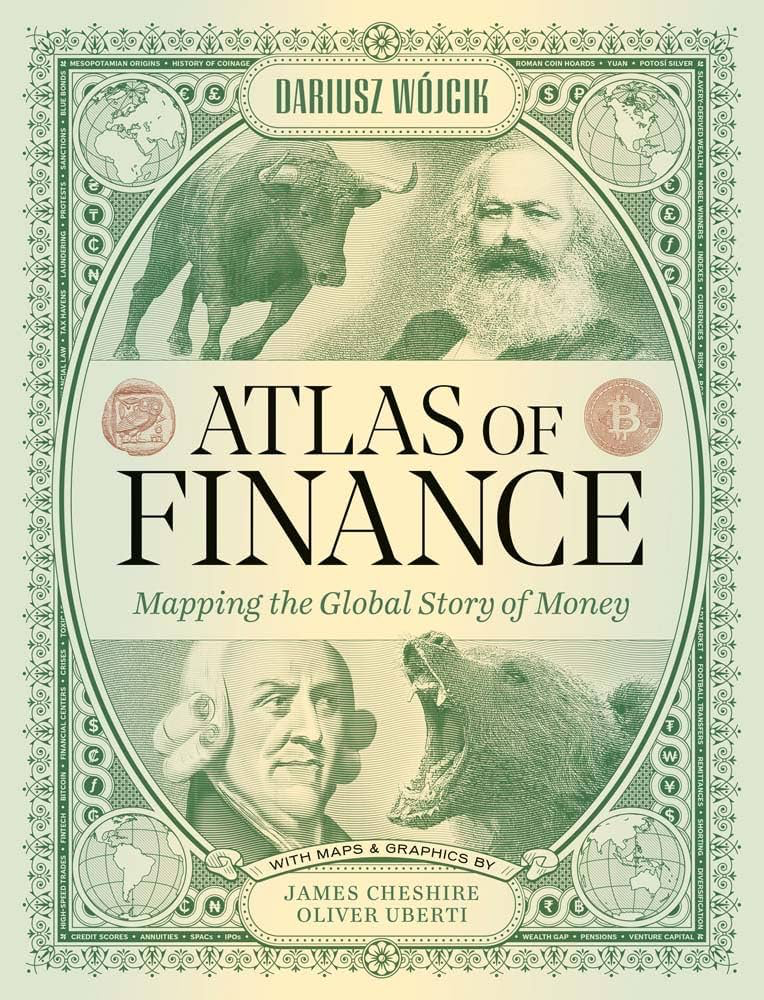

Discussion
Finance &
La finance ne s'analyse pas seule : elle s'inscrit dans des territoires, des régimes de valeur et des modes de gouvernement. Ces lectures explorent ses interactions avec la géographie, la sociologie et la science politique.
Finance does not exist in isolation: it is embedded in territories, value regimes, and modes of government. These readings explore its interactions with geography, sociology, and political science.
Atlas of Finance: Mapping the Global Story of Money
Par une cartographie systématique des flux, des acteurs et des logiques qui structurent la finance mondiale, les auteurs proposent un outil de visualisation autant qu'une thèse : la géographie de la finance révèle des concentrations de pouvoir et des inégalités spatiales que les représentations conventionnelles — chiffres agrégés, classements, indices — tendent à masquer. Voir la finance depuis l'espace, c'est déjà la comprendre autrement.
Through a systematic mapping of the flows, actors, and logics that structure global finance, the authors offer a visualisation tool as much as an argument: the geography of finance reveals concentrations of power and spatial inequalities that conventional representations — aggregated figures, rankings, indices — tend to conceal. To map finance geographically is already to understand it differently.
WÓJCIK, Dariusz et al. Atlas of Finance : Mapping the Global Story of Money. New Haven ; Londres : Yale University Press, 2024.
Wójcik, D. et al. (2024). Atlas of Finance: Mapping the Global Story of Money. New Haven: Yale University Press.

L'édifice de la valeur — Les fonds immobiliers et la crise des bureaux
The Value Edifice — Real Estate Funds and the Office Crisis
Duros interroge la construction sociale de la valeur en finance — non pas comme donnée objective ou résultat de marchés efficients, mais comme un édifice institutionnel, conventionnel et symbolique. L'article déplace la question : il ne s'agit plus de savoir ce que vaut un actif, mais de comprendre qui a le pouvoir de le valoriser, selon quelles procédures et avec quels effets sur la distribution des richesses. Face à la vacance croissante des bureaux post-Covid, un second article décrit comment certains fonds immobiliers transforment la dépréciation en opportunité — et les effets redistributifs qui en résultent sur les marchés urbains.
Duros examines the social construction of value in finance — not as an objective given or the output of efficient markets, but as an institutional, conventional, and symbolic edifice. The article shifts the question: it is no longer about what an asset is worth, but about who has the power to value it, through what procedures, and with what effects on the distribution of wealth. A second article describes how, faced with growing post-Covid office vacancy, certain real estate funds transform depreciation into opportunity — and the redistributive effects this produces on urban markets.
DUROS, Marine. « L'édifice de la valeur : pratiques de valorisation dans le secteur de l'immobilier financiarisé ». Revue française de socio-économie, 2019, n° 23, p. 35-57.
DUROS, Marine. « Quand les fonds immobiliers tirent profit de la crise des bureaux ». AOC [en ligne], publié le 10 septembre 2025.
Duros, M. (2019). 'L'édifice de la valeur: pratiques de valorisation dans le secteur de l'immobilier financiarisé'. Revue française de socio-économie, 23, pp. 35–57.
Duros, M. (2025). 'Quand les fonds immobiliers tirent profit de la crise des bureaux'. AOC [online], published 10 September 2025.
La démocratie disciplinée par la dette
Lemoine montre comment la dette publique est devenue un instrument de gouvernement — non pas une contrainte subie, mais un dispositif construit pour imposer une discipline budgétaire qui court-circuite les arbitrages démocratiques. En reconstruisant la trajectoire historique et politique de la dette française, l'ouvrage en dévoile la dimension normative : la dette n'est pas un fait économique neutre, c'est un rapport de force.
Lemoine shows how public debt has become an instrument of government — not a constraint endured, but a device constructed to impose fiscal discipline that short-circuits democratic deliberation. By reconstructing the historical and political trajectory of French public debt, the work exposes its normative dimension: debt is not a neutral economic fact, it is a power relation.
LEMOINE, Benjamin. La démocratie disciplinée par la dette. Paris : La Découverte, 2022.
Lemoine, B. (2022). La démocratie disciplinée par la dette. Paris: La Découverte.